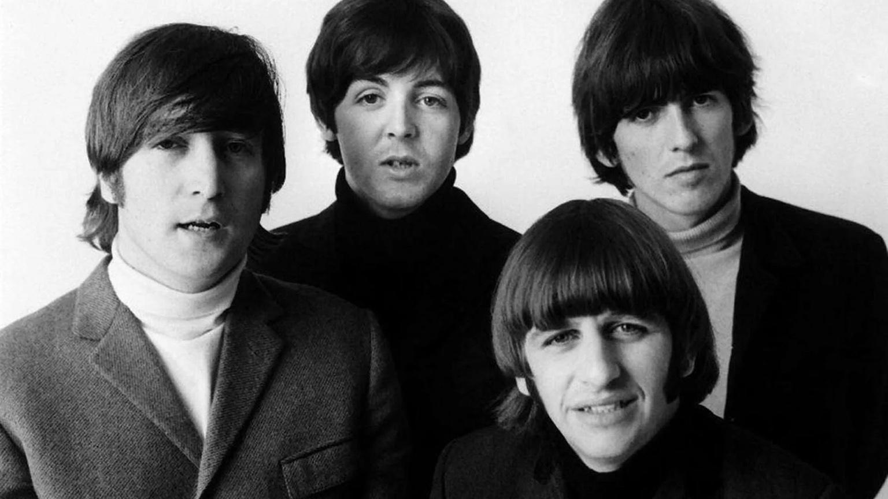
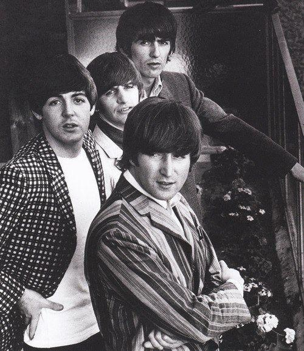
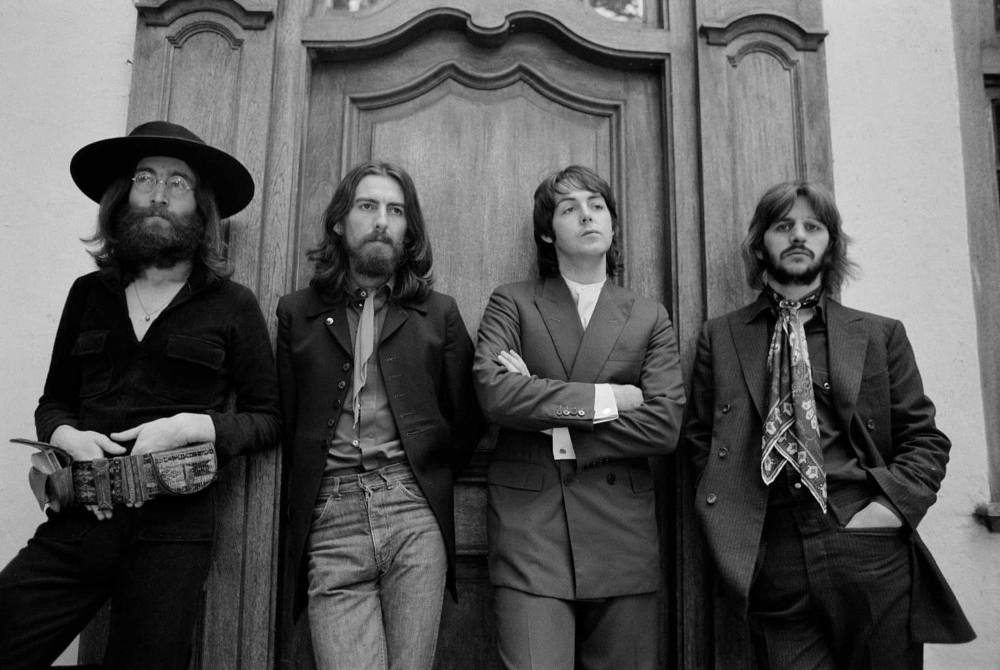
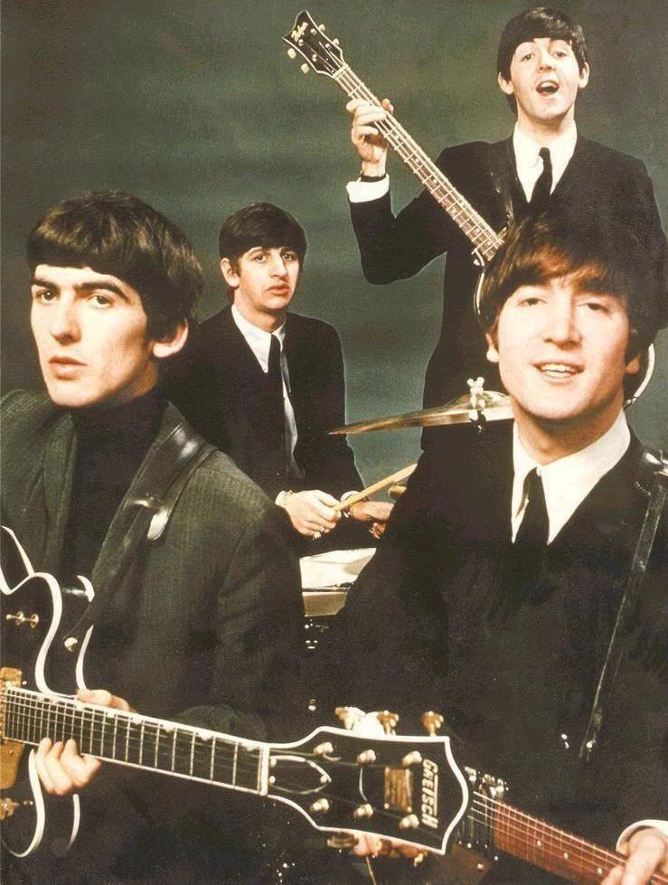

contact / fan club
Контакты
Для вопросов по трибьют-сетам, мерчу и коллаборациям.
Telegram бот
@TheBeatles_bot
Самый быстрый канал связи.
Самый быстрый канал связи.
E-mail
booking@example.com
press@example.com
press@example.com
Social
Instagram / YouTube / TikTok (ссылки по запросу)

Пресс-фото в официальном стиле

Редкие закулисные моменты

Телевизионные выступления вживую

Сессии записи и гитары